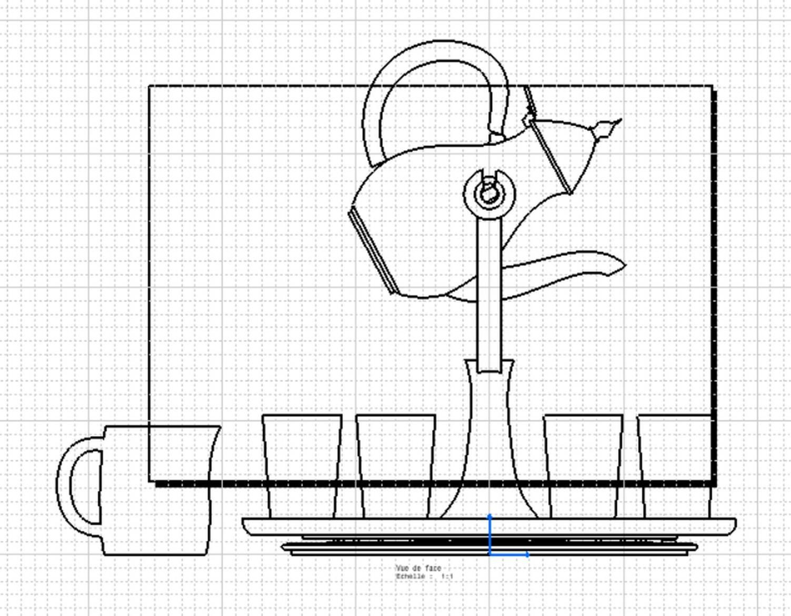
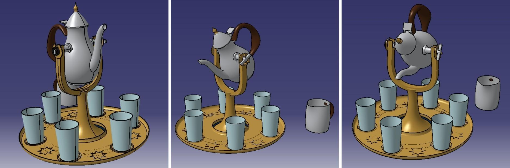
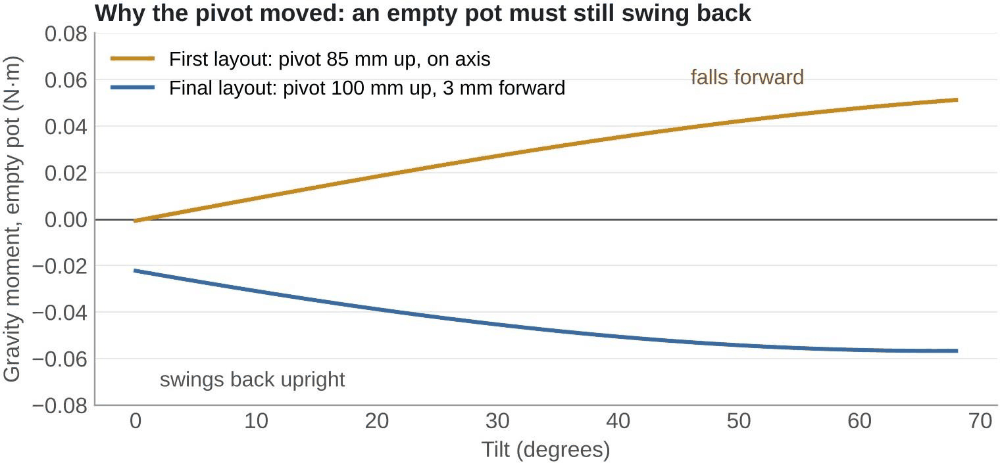
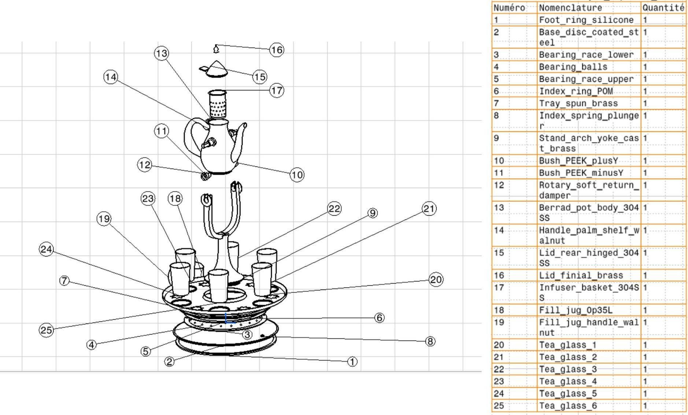
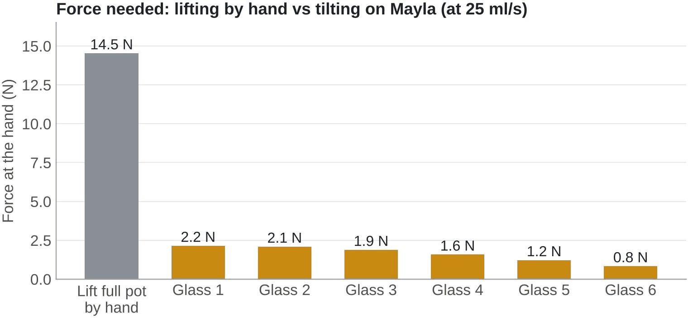

Inclusive Product Design | Self-Returning Pivot Mechanism | CATIA V5 Assembly & Drafting
Serving mint tea in Morocco is a hosting ritual: the host pours in front of the guests, from height, to raise a layer of foam. With a full 0.75 L teapot weighing about 1.5 kg and holding boiling water, that pour asks a lot of the wrist — and it is exactly the movement that hand osteoarthritis and age-related weakness take away first. Existing aids (kettle tippers, electric dispensers) remove the effort but also remove the ritual.
Mayla keeps the host pouring at the table without lifting the pot. The teapot hangs on two pivot pins in a brass yoke and is tilted with an open palm; when released, gravity swings it back upright at any fill level. A rotating, indexed tray brings each of the six glasses under the spout in turn. The set was developed through a six-step design process (understand, empathize, define, ideate, prototype, evaluate) as a 25-component parametric CATIA V5 assembly, linked to a pour model that computes moments, flow and where the stream lands.
Let a host with weak or painful hands serve six glasses from one fill without ever lifting the hot pot — with an open-palm push of no more than 3 N, a pot that always returns upright on its own, and a set that looks like traditional tableware rather than a medical aid.
The need statement — a host with weak hands should keep pouring for their guests without lifting a full pot of boiling water — was broken down into ten measurable requirements, drawing on the universal-design principles of low physical effort and tolerance for error:
Eight alternatives — from a tipping plate and a samovar-style tap to an electric pump — were scored on efficiency, preservation of the ritual, safety, dignity, and cost and ease of repair. The swing cradle with a ring tray came out clearly ahead; the next-best concepts removed the effort too, but at the cost of the pour or of the ritual.
| Concept | Weighted score |
|---|---|
| Swing cradle + ring tray (selected) | 4.10 |
| Two-handled pot | 3.25 |
| Samovar tap | 3.20 |
The yoke that carries the pot is a horseshoe arch taken from Moroccan architecture — and it is the load path, not an ornament. The pot keeps the traditional berrad silhouette, and the spun-brass tray is engraved with eight-point stars. These choices are deliberately left open to change by Moroccan hosts and makers before production.
The pot is carried on two pins in PEEK bushes. The pivot sits 100 mm above the pot and 3 mm forward of its axis, so with a full pot the centre of gravity hangs 28 mm below the pivot — gravity always pulls the pot back to vertical. To pour, the host lifts a walnut palm rest 111 mm behind the pivot: a short lever pushed with an open hand, never a handle to grip.

CATIA V5 drafting view. The pot rotates about the pin at the top of the yoke; the spout tip sits 97 mm ahead of and 58 mm above the pivot, so it travels almost vertically during the pour and the stream stays over the glass.
The hand force comes straight from the moment balance about the pivot. At 35° of tilt (about 660 ml left in the pot), the 13.7 N weight acts only 16 mm behind the pivot — compared with 14.5 N to lift the full pot by hand:
Fhand = (W·d + Mfriction) / 111 mm ≈ 2.2 N

The pour sequence in the CATIA assembly. As the pot empties the host tilts further; the pour height falls from 165 mm at the first glass to 112 mm at the last.
Linking the CAD geometry to the pour model exposed three problems before any hardware existed:
In the first layout the pivot sat 85 mm above the pot, on its axis. With a full pot this works, but as the pot empties its centre of gravity rises and the moment changes sign: a nearly empty pot fell forwards instead of swinging back. Raising the pivot to 100 mm and moving it 3 mm forward keeps the return moment negative across the whole tilt range and at every fill level.

First layout (gold): positive moment, the empty pot falls forward. Final layout (blue): negative moment from 0° to 68°, so the pot always swings back upright. Calculated from the CAD geometry.
With a 10 mm spout bore the landing point of the stream spread over 70 mm as the flow rate and tilt changed. Opening the bore to 12 mm and bringing the glasses closer together cut the spread to 57 mm — and shortened the tray from 418 mm to 368 mm.
Flats machined on the pivot pins solved it: the pot can only be lifted out of the yoke when it is upright, and is locked in as soon as it tilts about 5°.

25 components in 15 part groups, all of which come apart with a screwdriver in the CAD model. Materials are separable — 304 stainless steel, recycled brass, walnut, PEEK and POM — to support repair, ten-year spare parts and end-of-life recovery.
The design was checked against every requirement using the CAD geometry and the pour model. A sweep through 0–68° found no mechanical clashes.
| Requirement | Result | Status |
|---|---|---|
| Low effort | 2.2 N at most, no grip | Met (calculated) |
| No lift to serve | Serves six; 11 ml left at the 68° stop | Met (calculated) |
| Fail-safe | Return moment ≥ 0.022 N·m, twice the estimated friction | Met (calculated) |
| Accurate | 97 % of cases; last glass at slow flow misses by 1 mm | Mostly met |
| Ceremony | 165 mm first glass, 112 mm last; foam unknown | Partly met |
| Stable | 24.9 N worst case (target 20 N) | Met (calculated) |
| Food safe | Specified; lab test still needed | Needs test |
| Dignified | Not yet tested with people | Needs users |
| Repairable | All 15 part groups separate in the CAD model | Met (by design) |
| Viable | Break-even at 368 sets on desk estimates | Needs quotes |

Peak force to pour each glass on Mayla (gold) against lifting the full pot by hand (grey), at 25 ml/s and a bearing friction coefficient of 0.25.
A desk estimate for a first batch of 500 sets, made in Morocco by six craftsmen over about ten weeks:
Digital prototype — user testing is the next phase
The results on this page are calculations from the CAD geometry, not user evidence. They assume a bearing friction coefficient of 0.25, a spout velocity coefficient of 0.75 and little slosh. The analysis also surfaces real limitations: filling still means lifting a 0.48 kg jug three times; the 165 mm first pour is lower than a traditional pour from around a foot; foam has not been tested; and the 6.7 kg set needs a stable, low salon table. Next: a cardboard rig with a real pot tested by five hosts with cold water, a separate hot-foam test, a food-contact lab test and supplier quotes — with a redesign if hosts find the shorter pour unacceptable.
✓ Project Outcomes